©2022 G Benoît, email
Read this entirely to understand the concepts before actually practicing the hands-on section.
Remember that the "database" here means the computing container that holds one or more tables. It’s the tables that hold the actual data. There is only one active database open at a time.
Create: The syntax is CREATE DATABASE databasename;. The convention is to use all upper-case letters for commands and to use italics or <command> to indicate some variable, such as where you’d add your own specific table names or other commands.
You must have administrative rights on your computer. And you must have admin rights over your database. These are two different things!
Note: to run a database software product like MySQL, we start two different mysql activities. The first is called the daemon in Unix or a "Service" in Windows. A daemon or service is software that runs in the background to listen for requests from the computer. The request the sql daemon/sql service is listening for is our request to use MySQL. If the daemon isn’t started, our SQL commands will fail. So, after starting the daemon/service, we start SQL. Then we can issue commands to SQL.
First, the big picture before we start ...
USE, e.g., USE TouristSystem;. MySQL will confirm we have selected this database.exit; command]Overview: Starting MySQL in the terminal window Unix and Mac:
There are several ways to start MySQL.
Mac For clarity’s sake, I’m going to navigate first to the folder (directory) where my copy of SQL is storted. If you're using a Mac or Unix, on most setups, this will be /usr/local/mysql. Then to start the command, we issue a command that starts the mysql script. The command uses two "switches", -u (for user) and -p (for password, aka a "password challenge"). We want to log into MySQL as root so we can have full access over SQL. The -p causes mysql to challenge us for our password. Enter the password. If you’re successful a lot of data wfill be shown about your copy of mysql and then the prompt will change to the MySQL prompt. Here you can enter SQL commands! (Of course, we’ll need to exit MySQL when we’re done, entering the command exit; or quit; to return to the Terminal.
Mac Users: you should have already installed the MySQL System Preferences Panel. Use this panel to start/stop MySQL service/daemon on your computer. You'll use the terminal window to issue SQL commands.
Windows Users: when you installed MySQL (version 8 or later) you installed also a Service; use this application to start/stop MySQL Service on your computer. You'll issue commands using the SQL Shell Window.
Mac users go to Preferences and find the MySQL icon. Click to start. Optionally, you can select "Start MySQL ... " if you plan to leave SQL running all the time. [Usually I leave this selected when I’m writing database systems ’cause I don’t want to have to restart every time; otherwise I shut it off.]
“Initialize Database”: Create a password just for MySQL.
Mac Users: Depending on what version of the operating system, you may see a "Legacy Loader" window. That’s okay - enter your system password (used when you log into your computer) and continue.
Now you’ll see the red dots turn green to show your SQL server daemon is active and waiting. There are many ways to start and run MySQL - in this case I'm using the Terminal window because we'll use the terminal window (Mac) or SQL Shell (Windows) and issue commands directly to SQL from these applications.
- Use your terminal window (Unix/Mac)
cd /usr/local/mysqlto make the MySQL home directory our starting point.- Now, log in as the root user:
./bin/mysql -u root -p- You'll be prompted for your MySQL password. Enter it and you're ready to go.
There are so many versions of Windows that it can be hard to identify exactly how to do some computing task in one’s own computing environment. Here are the "usual" directions for starting MySQL on Windows. You may have to experiment on your own, search the net for your version of Windows and MySQL. But in short ...
- Start the MySQL server (for version 8) by searching for "Services". Then you'll see a panel with a lot of options.
- Scroll down 'til you find the MySQL8 option.
- Click on it and you'll see "Start" link on the left of the panel. Click it and you're all set.
- You can stop the MySQL Service by clicking on Stop.
- You issue commands in the MySQL Shell Window.
- Logging into SQL on Windows: You need the username and password you created when installing MySQL. In this example, the user name is "suky" and the password is "catfood":
\c mysql suky@localhost:3306 --password="catfood"Note! Please see the images down below for Windows. Different versions of Windows along with different versions of MySQL mean there are different techniques for setting up Windows. This version was tested a lot using Windows 10 and MySQL 8.
Notice we specify "localhost" as if it were a URL. The 3306 is the port that the MySQL daemon/service listens too - meaning any commands that enter your computer from that port will be passed to MySQL for processing. What is meant by "port"? Back in the day, the wires/pins in the cables connecting computers were numbered. Of course we can't have thousands of wires in a cable so ports became virtual. For example web servers listen to port 80 to capture web page requests; SQL servers listen to port 3306.- Note: usually MySQL installs in this way
C:\Program Files\MySQL\MySQL Server 8.0\bin\. If the above start method didn’t work, navigate to that folder and then use themysqldcommand.
Starting the MySQL Service on Windows:
On Windows, start the "Services" panel
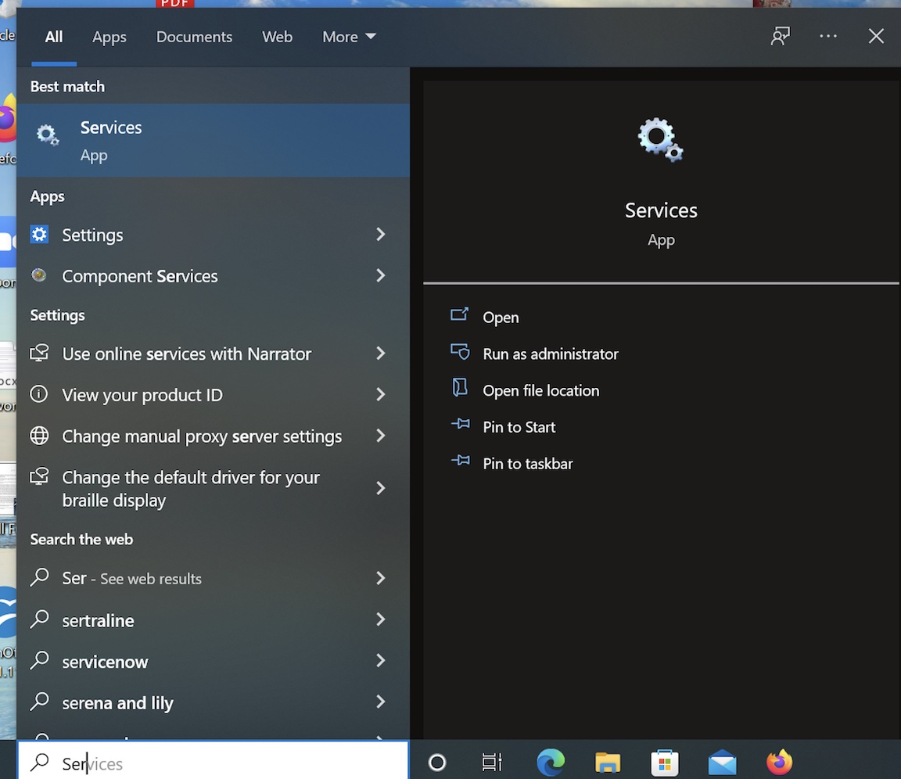
Next, locate the service for MySQL
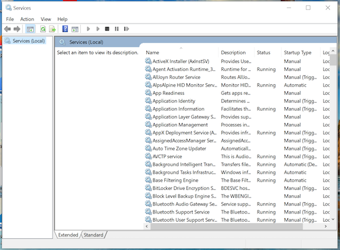
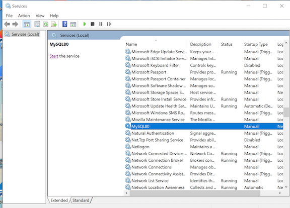
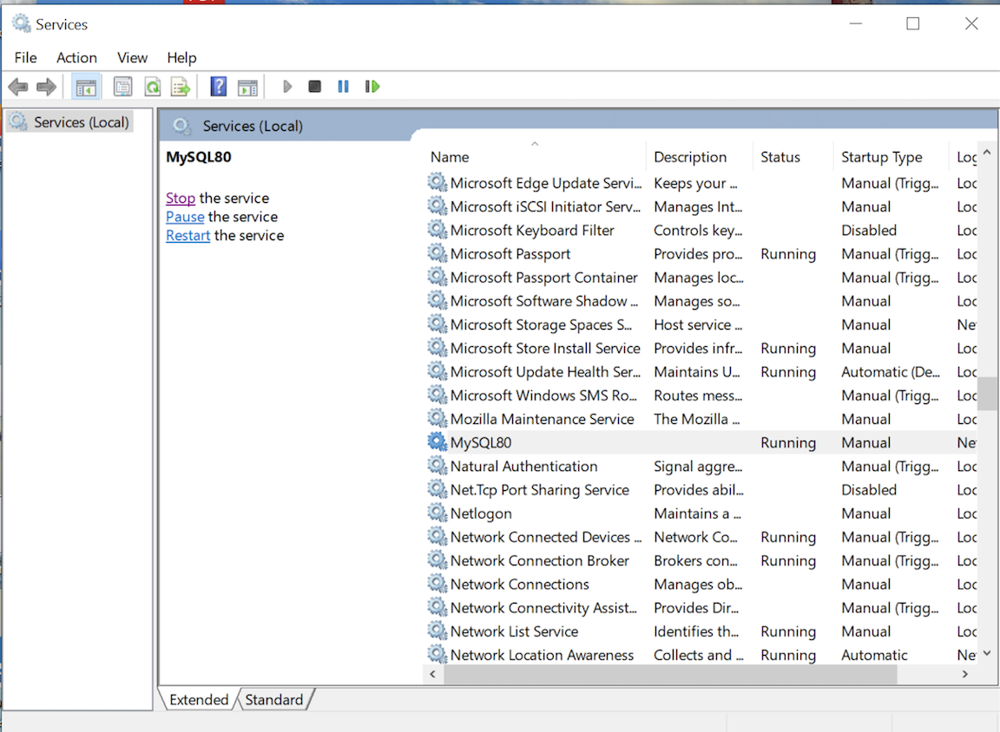
Once you've started the service, switch to the MySQL Shell. The MySQL Shell requires that we start the actual MySQL by logging in.
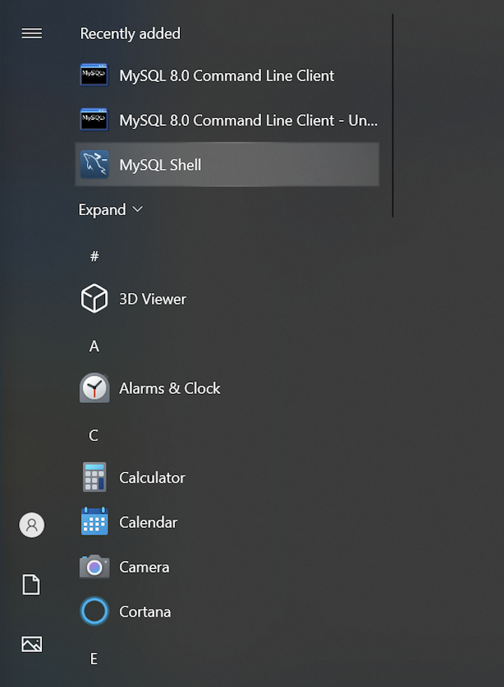
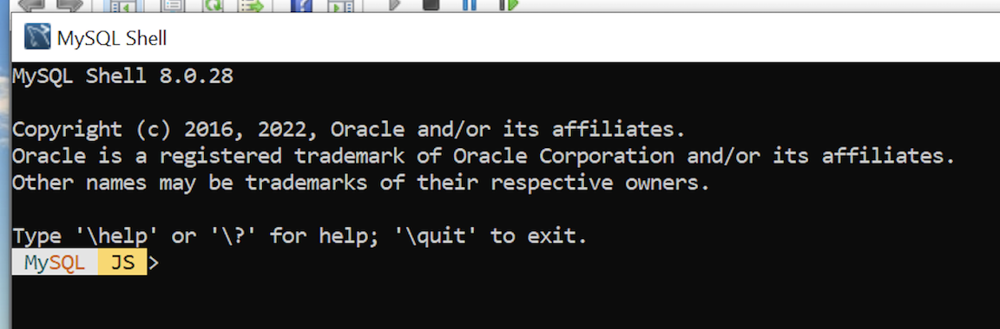
Notice this unusual prompt. When using the MySQL Shell there are some commands that start with a slash \. Use this \ option to connect \c or \connect to the MySQL on our computer.
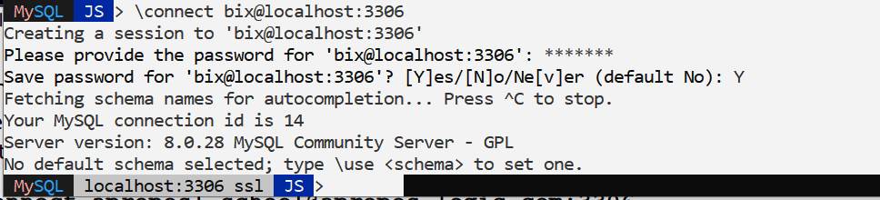
Please be careful with the commands ... notice the command first to connect. Next when using the shell we provide the user name and the server. The port for SQL is 3306 ... In this case, my username is "bix" and my local machine (and yours, too) is "localhost". Replace my username with yours, of course.
\connect bix@localhost:3306
\sql.Now that we've started the MySQL Shell and started an instance of MySQL, we'll be able to issue commands directly to MySQL! Notice the slight change in the prompt from JS to SQL.
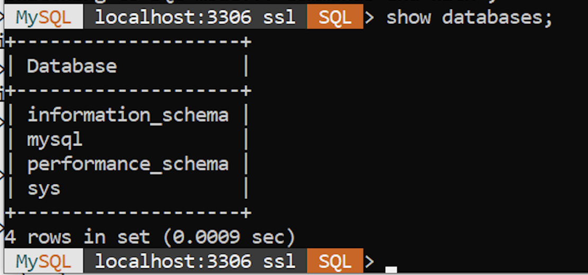
All users: in your terminal window or MySQL shell, you can exit MySQL by entering
exit;to end your MySQL session.Next you can shut down the Service/daemon: On Mac use the System Preferences to shut down as you did to start. On Windows, if you're using SQL Shell, you may need to use quit; or exit; and then perhaps \q to exit the shell. When done with the shell, you can return to the Service panel and and select MySQL - choose Stop. All done!
Before getting to the hands on, you should get a sense of what you'll likely see on your screen. In these examples, we see what happened step-by-step on a Mac using the Unix terminal window. First start the daemon using the Systems Preferences Panel (Mac).
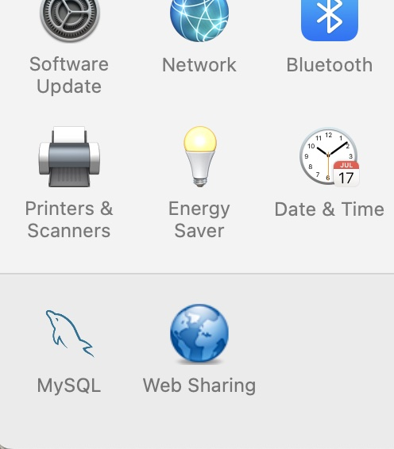
The preference panel shows what version of MySQL is on your computer and a few other options. Here we see 8.0.17. Notice the red dots: the MySQL daemon is not active. Click on the Start MySQL Server and in a few moments the dots should turn green, showing you the MySQL daemon is ready.
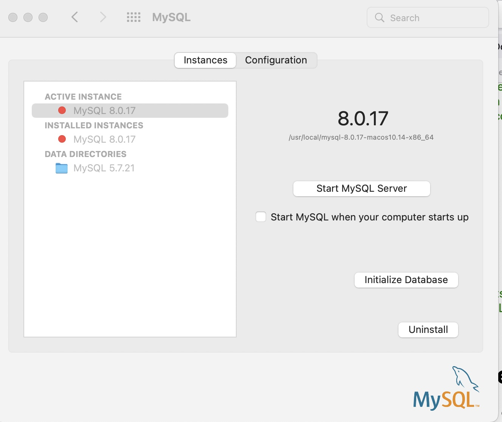
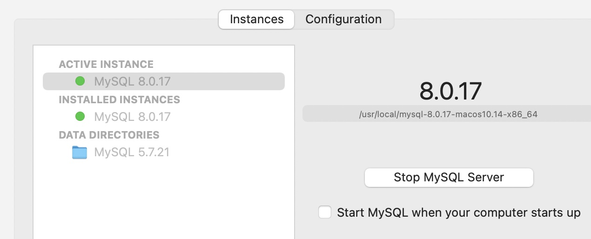
Using the Terminal or Shell Window
now that the MySQL is started. Let's connect to MySQL by logging in:
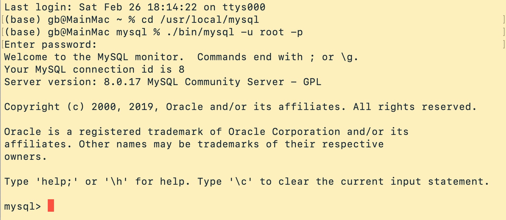
In this situation, I chose to start mysql by using cd /usr/local/mysql (the default location where MySQL is installed (on Mac and Unix)). Next I used a command to start mysql identifying myself as the root user (-u) and asking MySQL to challenge me by asking for my password (-p) ./bin/mysql -u root -p. Notice MySQL responds with asking me for the password. If I enter it correctly, I see the server version, Oracle trademark and other info and then the mysql prompt: mysql>
Once we've started MySQL and logged in, we can ask to see what databases were automatically created and then select a database to use (remember there's only one database at a time). Via the use command, we select a database to make active; then we can see what tables are in that database, using the show command.
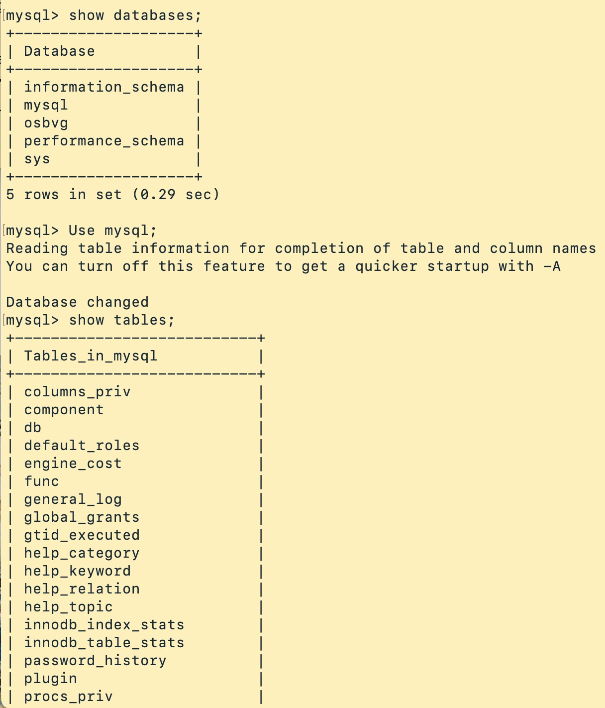
Before moving on, note that as the database administrator we need certain permissions or rights over all the databases and tables in MySQL. We need to know exactly what our rights are, too, and who MySQL thinks we are. When I logged in above, I logged in as "root", a user with superpowers over the database. That means I can create new users, new databases and tables, and control both by how I grant permissions to others. As a default logging in as the root user, we should still check ... and we'll see by using the SHOW GRANTS; command. Notice how MySQL sees as almost as if we were on the Net, by showing our user name as root@localhost.
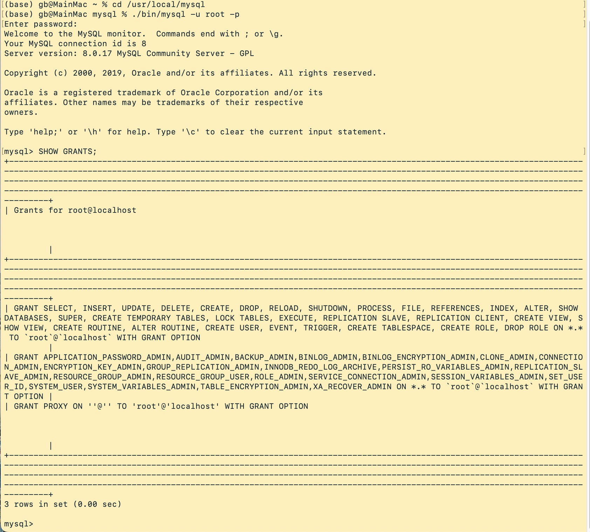
Now that we’re in MySQL, let’s see what Databases there are. In this example we see some built-in databases that MySQL itself uses: information_schema, performance_schema, mysql, and sys. [Don’t play with these databases, but we will take a passive look.] SQL commands end with a semi-colon. Very important!
Take a look at the information_schema and the mysql databases. We won’t touch these because these tables are used by MySQL to identify for itself its own resources and our preferences. Try the following commands once you’re at the MySQL prompt (don’t use the numbers - just the words, e.g., USE).
SHOW DATABASES;USE information_schema;SHOW TABLES;USE mysql;SHOW TABLES;exit;SQL doesn't care about capitalization. The convention is to use ALL CAPS for SQL commands; use lower-case for our specific databases, tables, field names, etc.
One of the most common hassles is that we might not have the rights over our MySQL and databases that we think we have. Once you have your SQL running, let’s see what rights are there as a default by entering the command SHOW GRANTS. Notice we see grants for "root@localhost", "`root`@`localhost` WITH GRANT OPTION, and GRANT PROXY ON ’’@’’ TO ’root’@localhost’ WITH GRANT OPTION. Notice the many options: GRANT SELECT, INSERT, UPDATE, DELETE ... and so on. This is good - it means we, as we’re logged in as root, have complete permission to create databases and tables, insert and delete data from those tables, update the structure of our databases and tables, and add data ("insert"), as well as create other users, backup the database, and more. Notice the @localhost. This is not unlike an email address - root@localhost - because we’re logged in as user "root" and acting as if we were actually on the Internet, the "localhost" allows us to develop applications that run on our computer and later run on the Net. localhost is actually a "unix pipe"; but we’ll see we can replace this with "127.0.0.1" which is a special IP number/URL that acts just like we’re live on the Net but never actually going on the Net.
Say we have lots of users with permission to use our database. We could ask MySQL to report on the privileges granted to them by their name. Remember, different OS and versions of MySQL can act differently than we expect.
Get Ready: For this hands-on activity, we're going to
- create a database
- select that database for use
- create a table in that database
- create a use with permission to use the database (and its table), along with a user name
- then grant permissions to that user
- confirm permissions with the "FLUSH" command
- insert some data into that table
- select some data from that table
- delete ("drop") the table
Now we'll jump right in and practice some fundamentals of MySQL access.
Note: I recommend strongly that you type your commands in a text editor first, or better write them down on paper, and review them very carefully. Note that every ( and ) must be balanced, as must quotation marks; commands end with a semi-colon ; and missing anything like this will cause an error. If you get stuck on the command line, it's likely because you're missing a quote or ) so review the command if you can and enter ' or ) and that will cause SQL to reject and end the query. You'll be returned to the SQL prompt, that looks like mysql>. Here's an image of my testing my commans first in a text editor ... Note that we can cut-and-paste commands from our text editor and paste them into the SQL prompt.
First notice I made a mistake! If you do, you'll see an error message. Just try again: 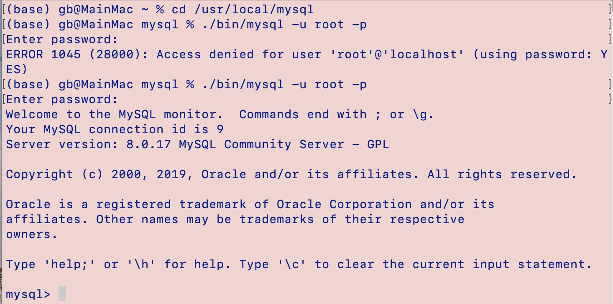
Now we have created the database. We need to select it as the active work area:
Let’s create a table just for practice. [Pay close attention to the syntax, spacing, commas ....]
Now let’s create a user for our database. Be sure to keep record of the user and this user’s password! I’m using bix and thecat as password. Replace the demo username and password with your own! You’re welcome and encouraged to create your own.
Now we want to confirm that our user exists. By default new users have no privileges. So we have to add them.
For practice, let’s give this end-user complete rights (using the * character for "all") over our new database ...
If you're completed the Introduction to Informatics course, you're aware of the differences of input methods and character sets. For example, if you're using a computer in the US you're probably inputting data using WIN-1285 or a default Mac encoding scheme. What this means is when we press a keyboard key we generate a code for each letter. In many languages, we can represent all these letters using 8-bits. So a string of letters "cat" would be 8 x 3 bits or 3 bytes (24 bits). But what about other languages like Chinese? We need 16-bits to represent, say, "dragon" 🐉. If you're using windows you need a special "Escape" sequence (Alt +1F409); in Python there's an escape sequence (u"\U0001F409"); in binary it'd be 11110000:10011111:10010000:10001001. Wow, so many ways to do the same thing! So, we are going to think always of using the international standard for all letters/glyphs/characters, called Unicode. Check out the Unicode homepage and code charts and we'll prefer to use the computing implementation of this, called UTF-8 (Unicode Transformation Format - 8 bits). In short, we want to be sure that data entered by the user, be it "é" or "h" or "明" or "ẻ" will be stored correctly. We must, then, override MySQL default encoding of "Latin-1" to set it to "utf-8" or "ucs2".
We can convert a database to UTF-8 after converting it, too. But for now we'll focus on using UTF-8 from the start. You can see what character sets your version of MySQL supports by entering the command
The command to create a database to support all the languages and to have that database sort correctly, we must do a rather complicated-looking command.
CREATE DATABASE mydatabase CHARACTER SET utf8mb4 COLLATE utf8mb4_unicode_ci;
The above command tells MySQL to use the utf8 character set and allow us to sort (collate) data in the correct way for the various language. For a much more detailed and authoritative discussion see the MySQL 10.9.1 manual page.
Recap:
For this lesson you should confirm you can
- start your connection to MySQL
- check your user rights
- show databases
- select (use) a database as the active work area
- create a user and allow certain rights
- understand the purpose of utf-8 and internationalization in MySQL
- understand the concept of data decomposition
- stop MySQL